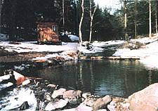
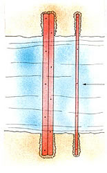
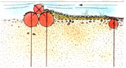
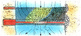
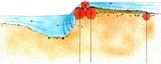

The Digger
March/April 1986
A pond adds both beauty and value to a country home. Here's a way to create one without resorting to expensive and soil-damaging heavy equipment.
A Stream Pond That Carves [and Cleans] Itself
by Tim Matson
One summer I swam in a stream pond in the second curve of an oxbow in Abbott Brook. The flow had chiseled into the bank, sweeping out a 20-foot bowl, then doubled back where the roots of a poplar grove held the bank together. Rebounding sediment had settled into a sandy beach on the shallow bank. You could swim all day against the current and never get anywhere.
This stretch of brook with its whirly-pit was one of the brightest lures when the surrounding land was deeded to a young family from California. Lee Ann and Mike turned salvage from an old carriage house into a post-and-beam saltbox near the bank and counted on the pond for household water and summer baths. One summer afternoon, with some help from their daughter Heather, they laid up a stone dam to deepen the basin to six feet. They chopped down a poplar to bridge the brook - great for hanging by the knees in the free current. But with autumn rains came a tide of silt that filled the little pond, and ice and spring snowmelt crumpled the dam.
Just south, Dave and Victoria built a silo house out of dismantled Army barracks trucked from Michigan. It was a memorial to thrift and sixties sentiment. Really monumental were their cellar sauna and front-yard pond. The sauna was a real beauty. Clear cedar boards lined the interior, and two racks of slatted benches crisscrossed the room. A mail-order sheet-metal stove burned with cheery red cheeks near a knee-high window that peered over a rocky brook. During tower construction David and Tor had let the brook run loose. With the house together, they looked around and decided to make a pond. They built a stone dam and shoveled silt out of the basin. The dam was laid up loose enough to pass the flow and contain a pool. It filled deep enough to inspire David, after a midnight sauna, to climb the ladder to his tower roof and leap for the dark pond below. But spring came with runoff that punched out the dam and swept in a load of silt - a nuisance for the rest of us and potentially fatal for David.
So a ritual grew in the summer. Neighbors gathered at different stream ponds for dam repair and silt shoveling. Given a good blend of hot sun and cold beer it was OK, until you got your toe crunched. I began to ponder a better solution. I found it in a 15-year-old illustrated bulletin published by the New York State Conservation Department. "The stream pond," I read, "must lie below the dam." It's simply geology: Pools form naturally in the wake of a waterfall.

[1] Dig two trenches across the stream bottom and four feet into the banks. Lay two logs in the downstream trench and one in the upstream, anchored with three-fourths-inch reinforcing rods. Site the trenches roughly four feet apart.

[2] Lay two-inch mesh wire over the logs and stream bottom, stapled to the logs.

[3] Spike smaller logs to the top of the downstream logs, leaving a midstream gap of one or two feet. Fasten only the outer ends of the top logs to the sills.

[4] Cover the wire mesh with brush and then stones. Anchor the log ends with soil and rocks. Now the notch should be enlarged by cutting back on each log alternately from the center of the spillway until the entire flow of the stream passes through. This opening should be cut during an average low-water period. Add spikes to secure the topside logs. Once the center opening is set, nail down an eight-inch-wide hoard to the two sill logs to cover the exposed wire.

[5] The digger dam carves, cleans, and aerates the in-stream swimming hole. It will flow ice free two or three months longer than a still-water pond.
"Log pyramid pool digger" is the title the conservationists tagged their pond-making method, and it wasn't long before I saw how smoothly it worked. With my neighbors, Blake and Aletta, who live on the brink of Podunk Brook, I raised a barrier of logs and stones across the water, triggering a waterfall that carved out a pond. Now it flows like a self-propelled excavator and even sweeps itself clean every spring - a sorcerer's impoundment. We just call it the digger pond .
A sidehill pond is a bath; the digger is a whirlpool. Still-water ponds lie under ice half the year; the churning digger pond freezes for two or three of winter's coldest months, at most. The digger attracts native trout without trapping them, simultaneously stirring up a richly aerated pond suitable for cage-culturing fish.
As with all forms of pond making, success depends on tapping natural advantages of terrain. A stream has a way of hinting at the best site for a digger pond: a hollow that could be enlarged, a slow shallow flow between stable banks, or a pool already forming under existing falls. Banks should be at least three or four feet high and sites prone to flooding avoided.
The size of the digger basin will be limited by the breadth of the stream, so look for a site wide enough to let you stretch out - "Ample and large, that the arms spread abroad might not be hurt," as Cicero described the ideal pond - but not so wide that finding dam materials is difficult, or where watershed runoff will overload the structure. A stream spanning ten to twenty feet, catching runoff from less than ten square miles, works well. Dam materials should be close at hand. Our digger dam was built with trees felled at the site. Round timbers about a foot in diameter make the best structure, with hemlock, cedar, and tamarack topping the list. For longest durability the bark should be peeled. Stones can be used in place of timber, although the dam will be less effective, if quicker to build.
Dams are subject to a trio of wracking forces: sliding, crushing, and overthrow. A strong foundation will prevent sliding, and a tight structure will avert crushing and overthrow. The best foundation for a digger is bedrock or solid bottom. A base of sand or mud will undermine the structure. If you fail to find a solid base, it may be possible to create one using an old loggers' technique for building stream-driven dams: Drive a row of wooden pilings into the streambed to keep the bottom from washing away and to form a base to which the sills of the dam can be bolted.
To be most effective, the dam should rest on a pair of sill timbers that traverse the stream, lying flat on the bottom and butted into the banks. To insure that the dam does not slide, an elaborate anchoring technique was suggested in the N.Y. State Bulletin. A trench is excavated about two feet wide, four feet deep into the banks, the base level with the streambed. If stream water is high, it may be diverted to one side by temporary dams made of logs or stone. Here on the Podunk, to save labor and comply with Vermont regulations against stream course alteration, we found low-water construction best.
Drift bolts are used to pin the twin timbers to the streambed, and an additional log is entrenched about four feet upstream. The sills are then tied to this anchor log with galvanized poultry wire. The pond maker drills one-inch holes every six feet or so in parallel sills and pins down the base by sledge hammering three-quarter-inch concrete reinforcing bars through the logs, deep into the streambed. Six-foot lengths of rebar sunk five feet deep leave a foot to crimp over and hold down the sills. Obstructions in the streambed may be sidestepped by repositioning the bolts or backfilling and weighing down the butt ends of the sills. Additional drift bolts should be pinned two feet to either side of the joints. The six-inch anchor log is then entrenched about four feet upstream of the sills, flush with the streamed, and drift-bolted or otherwise firmly secured. The chicken wire is then used to tie the sills to the anchor, as well as create a ramp to sweep water over the dam. The wire is blanketed over the width of the stream and secured to the anchor log and sills with galvanized nails or staples. Fine brush is layered over the wire and anchored with flat stones to complete the seal. Finally, two logs of similar girth are fitted into the sill crevice and spiked at the outside ends, leaving a midstream gap of a foot or two. The central opening is then cut wide enough to pass the entire flow of the stream into the center of the pond. This trimming should be synchronized with a run of low water. Additional spikes are added to secure the logs, with an eight-inch board nailed over the exposed sills to cleat the wire.
Of course, nothing in the world of natural stream ponds resembles such a structure. Aletta, Blake, and I didn't hesitate to assemble a simpler digger dam. We bridged the stream with a pair of balsam timbers, anchored the butts with stones, and backfilled the upstream side with more stones. By adding a rim of stones at the downstream end of the pond, Aletta made sure than even in a drought the pond spans 15 feet with four or five feet of water.
Blake and Aletta are guaranteed a regular catch from the pond in season. And since the pond is cupped at the head of a stretch of water that flows dead south, it gathers direct and reflected sun. Last summer Blake built a sauna at the northwest end of the pond, taking advantage of the sun to supplement the sauna's wood fire. Through all but the deepest freezes the pond stays clear for sauna baths. If their household water freezes up, the digger pond holds a reservoir of emergency water.
"It looks like a backwards dammed pond," Blake said awhile back, soaking under the falls between saunas. "But it sure does work."
EDITOR'S NOTE: Before altering the course or flow of any stream, check with your local water resources agency to be sure you'll be in compliance with the appropriate stream modification laws.
This article is reprinted by permission of The Countryman Press from Earth Ponds: The Country Pond Maker's Guide , copyright 1982 by Tim Matson.
|
 [1] Dig two trenches across the stream bottom and four feet into the banks. Lay two logs in the downstream trench and one in the upstream, anchored with three-fourths- inch reinforcing rods. Site the trenches roughly four feet apart. |
 [2] Lay two-inch mesh wire over the logs and stream bottom, stapled to the logs. |
 [3] Spike smaller logs to the top of the downstream logs, leaving a midstream gap of one or two feet. Fasten only the outer ends of the top logs to the sills. |
|
 [4] Cover the wire mesh with brush and then stones. Anchor the log ends with soil and rocks. Now the notch should be enlarged by cutting back on each log alternately from the center of the spillway until the entire flow of the stream passes through. This opening should be cut during an average low-water period. Add spikes to secure the topside logs. Once the center opening is set, nail down an eight-inch-wide hoard to the two sill logs to cover the exposed wire. |
 [5] The digger dam carves, cleans, and aerates the in-stream swimming hole. It will flow ice free two or three months longer than a still-water pond. |
 |